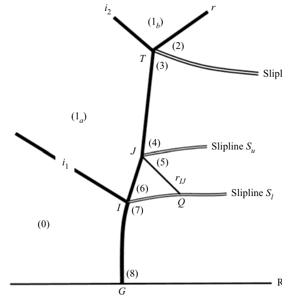
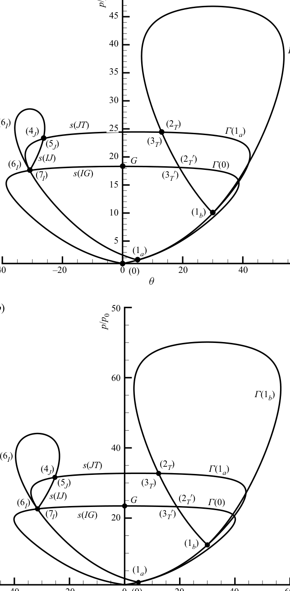
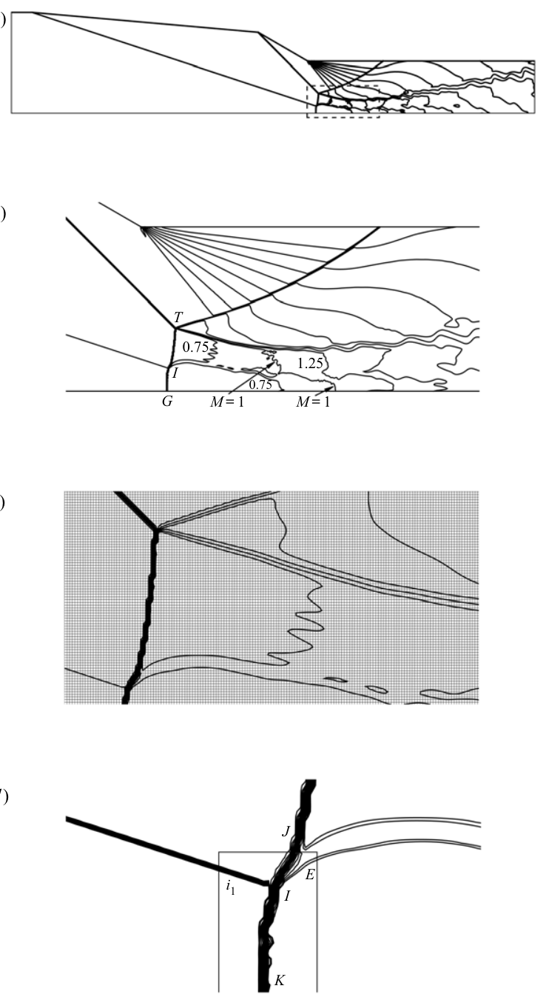
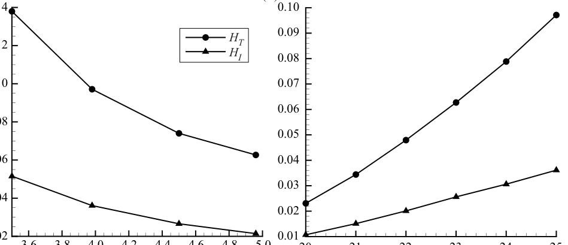

01中文摘要
研究同侧上游激波对马赫反射的影响，该情形对应双楔产生的两道人射激波在同一点反射、且下游激波强于上游激波。激波极线分析表明，这一构型形成倒置马赫杆，并在马赫杆与上游激波之间产生IV型激波干扰；干扰射流把马赫杆下游气流分成两个具有不同声速喉道的通道，使马赫杆尺寸的确定机制复杂化。转捩分析表明上游激波促进下游激波的马赫反射；CFD验证了极线分析预测的流型，并给出马赫杆高度和射流高度随来流马赫数与楔转折角的变化规律。
原始摘要（英文/原文）
, Mach reflection subjected to the influence of an upstream shock wave from the same side is studied here. This situation occurs when two incident shock waves induced by a double wedge reflect at the same point of the reflecting surface and when the downstream incident shock wave is stronger than the upstream one. A shock polar analysis is used to show that this configuration produces an inverted Mach stem and a type IV shock interference between the Mach stem and the upstream shock wave. This shock interference produces a jet that divides the flow stream downstream of the Mach stem into two ducts with different sonic throats, thus complicating the mechanism by which the Mach stem size is determined. A transition analysis shows that the Mach reflection of the downstream shock wave is promoted by the upstream one. Computational fluid dynamics is used to assess the flow pattern anticipated by shock polar analysis and demonstrates how the heights of Mach stem and jet depend on the inflow Mach number and wedge turning angle.
02阅读说明
文章类型：理论（激波极线分析）+ 数值（Euler 有限体积）研究，附一例黏性 RANS 对比。材料范围：PDF 共 20 页，bundle 全文完整（含附录、表 1–3）；式 (1.1)–(1.2) 与 (3.1)–(3.2) 经原 PDF 第 4、8 页核对，其余公式按文本层与图注读取。图表可读性：图 2 激波极线、图 4/5/6 马赫数云图为位图，曲线具体数值不可读，只能依据图注、正文描述与表 1–3 取值；表 1–3 数值可读。信息完整度较高；提取口径为“无黏二维定常完全气体”主线，黏性仅作为第 4.4 节单例。 文章类型：期刊
03一句话核心与三句话摘要
双楔两道入射激波同点反射时，下游激波的后马赫反射产生倒置马赫杆与IV型干扰射流，上游激波促进其发生。
- 双楔两道同族入射激波可在同一反射点反射，但既有研究只覆盖规则反射与前马赫反射，下游激波自身发生马赫反射的“后马赫反射”未被研究。 AI概括
- 作者用激波极线在 θ–p 平面识别出 T、I、J 三个三叉点、倒置马赫杆与 IV 型激波干扰射流，并用二阶 Roe 有限体积解 Euler 方程在 M0=3.98/4.5、θw=5°、δ=25° 下复现；M0=3.98 时射流为跨声速，M0=4.5 时为纯超声速。 AI概括
- 分离判据 δ>δ(D)(M0,θw) 表明 δ(D) 随 θw 增大而降低，即上游激波促进下游激波的马赫反射；射流把马赫杆后流道分成两个声速喉道位置不同的通道，使马赫杆高度的理论预测更困难。 AI概括
04核心内容清单
| 要点 | 类型 | 重要性 | 原文依据 | 属性 |
|---|---|---|---|---|
| 首次定义并研究“后马赫反射”：双楔两道入射激波同点反射、由下游激波发生马赫反射，区别于 Guan et al. (2018) 的前马赫反射。 | 问题定义 | A | p2，第1节；图1(c) | 原文明确 |
| 激波极线识别出 T、I、J 三个三叉点：T 为 i2/r/马赫杆交点，I 为 i1/倒置马赫杆交点，J 为 s(IJ)/JT/rIJ 交点。 | 理论结构 | A | p5–7，图2、图3 | 原文明确 |
| 由于所选工况低于第一道激波的 von Neumann 条件，第一道激波若发生马赫反射必为倒置（inverse）马赫反射，从而形成倒置马赫杆。 | 机理 | A | p5，§2.3 | 原文明确 |
| 第一道入射激波与近法向强马赫杆相交构成 IV 型激波干扰，产生射流，把马赫杆后流道分成上下两个通道。 | 机理 | A | p7，§2.5；p13，§4.3 | 原文明确 |
| 两通道的声速喉道位置不同：上通道由楔角膨胀波形成，下通道因初始扩张且跨声速射流有时间滞后而远在下游。 | 机理 | A | p13，§4.3 | 原文明确 |
| CFD 复现了倒置马赫杆与射流；M0=3.98 时射流为跨声速，M0=4.5 时为纯超声速并含斜激波/膨胀扇。 | 数值结果 | A | p9–10，图4–图6 | 原文明确 |
| 分离判据 δ>δ(D)(M0,θw)；δ(D) 随 θw 增大而降低，说明上游入射激波促进下游激波的马赫反射。 | 判据 | A | p11–12，图7 | 原文明确 |
| HT 与 HI 随 M0 增大而减小、随 δ 增大而增大；作者论证二者随 θw 增大而增大。 | 参数规律 | A | p12–13，图8 | 原文明确 |
| 数值不确定度约 1.02%（网格）与 1.65%（时间振荡），作者认为不足以改变上述规律。 | 不确定度 | B | p13，§4.2 | 原文明确 |
| 黏性使马赫杆高度降低（0.0963→0.0859）、射流相对宽度增大（0.0311→0.0474），与单激波中黏性抬高马赫杆的经验相反。 | 黏性效应 | B | p14，表1、图9 | 原文明确 |
| 加密网格后三个三叉点高度变化不大，但 Ljet/HT 从 0.0415 变到 0.0228，说明射流宽度未网格收敛，而射流拓扑不变。 | 数值局限 | B | p18，表3；p18–19 | 原文明确 |
| 正文称黏性使射流宽度增加“nearly 20%”，但表1 的 Ljet/HT 由 0.0311 增至 0.0474（约 52%），两处口径不一致。 | 数据一致性 | B | p14，表1及同页正文 | AI推断 |
05引言：研究问题与领域缺口
【原文明确】研究对象是“同一侧上游激波影响下的马赫反射”，出现在双楔诱导的两道入射激波于反射面同一点反射、且下游入射激波强于上游激波之时（p1 摘要）。【原文明确】双楔在超音速进气道中有重要应用，但以往双楔反射研究通常不设置共同反射面（p2）；Guan, Bai & Wu (2018) 只研究了规则反射与前马赫反射，Guan et al. (2020) 讨论了解的双解，后马赫反射“has not been considered before”（p2）。【原文明确】作者提出三个待研究问题：后马赫反射的临界条件、其流场结构（特别是第一道入射激波与马赫杆之间预期出现 IV 型激波干扰）、以及第一道入射激波如何影响第二道激波的马赫杆与下游流动（p2）。【AI概括】目标是在无黏完全气体、二维定常框架内，用激波极线预示结构、用 CFD 确认，并给出转变判据与参数影响；γ=1.4，不考虑真实气体效应（p4）。
06流动条件与几何构型
| 项目 | 数值/描述 | 依据 | 备注 |
|---|---|---|---|
| 来流马赫数 M0（工况1） | 3.98 | p8，§3.2 | 对应激波极线图2(a) |
| 来流马赫数 M0（工况2） | 4.5 | p10，§3.2 | 对应激波极线图2(b)，射流为纯超声速 |
| 楔面初始偏转角 θw | 5° | p8，§3.2 | 两工况相同；参数研究另取 0°、3°、8°（图7） |
| 附加偏转角 δ | 25° | p8，§3.2 | 参数研究取 20°–25°（图8b） |
| 上游楔面段宽度 w1 | 1.1（无量纲，坐标以 A 为原点） | p8，§3.2 | 文中未给参考长度，坐标与长度均为无量纲 |
| 下游楔面段宽度 w2（M0=3.98） | 0.276 | p8，§3.2 | 由式(3.2)在膨胀扇前缘过 N 的条件下确定 |
| 下游楔面段宽度 w2（M0=4.5） | 0.248 | p10，§3.2 | 同上 |
| 反射点纵坐标 yN 与 HA | yN=−0.485，HA=0.485（M0=3.98）；yN=−0.425，HA=0.425（M0=4.5） | p8、p10 | HA=−yN |
| 比热比 γ | 1.4（完全气体，空气） | p4，§1 | 不考虑真实气体效应 |
| 维数与定常性 | 二维、定常（射流区实际存在非定常振荡） | p8；p16–18 附录 | 附录表明加密后稳态/非稳态推进均不收敛 |
| 总温、总压、静温、静压 | 文中未提及 | p4 | 仅用无量纲密度、压力、温度/能量，不需有量纲值 |
| 边界层状态与湍流度/噪声 | 无黏为主；黏性算例 Re=10^7（基于入口高度），RANS k–ω SST | p14，§4.4 | 来流湍流度、噪声未提及 |
| 黏性算例入口湍流量 | k=0.8，ω=0.8（无量纲） | p14，§4.4 | 文中未说明其归一化方式 |
07核心现象与关键参数
| 参数 | 定义 | 数值 | 关系/说明 | 依据 |
|---|---|---|---|---|
| HT | 马赫杆（马赫杆段 TG）高度 | M0=3.98、w1=1.1、θw=5°、δ=25° 时无黏 0.0963，黏性 0.0859 | 随 M0 减小、随 δ 与 θw 增大（图8） | p14 表1；p12–13 图8 |
| HI | 干扰点 I 的高度（第二三叉点位置） | 随 M0 与 δ 变化的曲线见图8；表3 中约 0.0347–0.0354 | 与 HT 同趋势 | p12 图8；p18 表3 |
| HJ | 第三三叉点 J 的高度 | 加密网格下 0.0367–0.0384（表3） | 文中未给解析关系 | p18 表3 |
| Ljet/HT | 射流初始段相对宽度（无量纲） | 无黏 0.0311，黏性 0.0474；不同网格 0.0228–0.0415 | 未网格收敛 | p14 表1；p18 表3 |
| δ(D)(M0,θw) | 下游入射激波发生马赫反射的临界附加转角，由 θw+δ 等于 M1b 对应的分离角确定 | θw=0° 时与 Mouton (2007) 一致；随 θw 增大而降低（图7） | δ>δ(D) 时发生马赫反射 | p11，§4.1 |
| β1a、β1b | 第一、第二道入射激波的激波角（弱解） | 由 tanθw=fθ(M0,β1a)、tanδ=fθ(M1a,β1b) 求得，具体数值文中未列 | 进入式(3.1)–(3.2) | p4 式(1.2)；p8 式(3.1)–(3.2) |
| M1a、M1b | 第一、第二道入射激波后的马赫数 | 由 fM 逐级求得，文中未列数值 | M1b 决定下游激波分离角 | p4 式(1.2)；p11 |
| 数值不确定度 | HT 的网格与时间振荡不确定度 | 网格 1.02%，时间振荡 1.65% | 作者认为不改变结论 | p13 |
08方法与数据
【原文明确】理论部分采用压力–偏转角激波极线分析：对每道激波用斜激波关系 (1.1a–c)、(1.2) 在 θ–p 平面作极线，极线交点给出可能的流动状态（p4–5）。【原文明确】几何上要求两道入射激波在同一点 N 反射，由式 (3.1) 给出 (xN,yN)，由式 (3.2) 在“膨胀扇前缘特征线经过 N”的条件下确定 w2（p8）。【原文明确】数值上求解可压缩 Euler 方程，有限体积、二阶 Roe 格式，使用商业软件 Fluent；作者称该方法已在 Lin, Bai & Wu (2019) 中对 Sudani et al. (2002) 与 Li, Chpoun & Ben-Dor (1999) 的非对称反射实验验证过（p8）。【原文明确】主算例为 2600×500 均匀网格；附录给出 grid A–E 五套加密网格（3600×730 至 7500×1500 单元），并用稳态与非稳态两种推进、最多 5×10^5 次迭代考察网格与时间收敛（p16–18）。【原文明确】黏性算例求解 N-S 方程，黏性项二阶中心差分，湍流用 RANS k–ω SST，入口 k=0.8、ω=0.8，基于入口高度的 Re=10^7，网格在 grid C 基础上加密楔下表面边界层（p14）。【AI概括】本文没有给出新的实验验证或解析解验证，验证依赖作者前作引用的实验与网格/时间收敛性检查。
| 项目 | 内容 | 依据 | 备注 |
|---|---|---|---|
| 理论方法 | θ–p 平面压力–偏转角激波极线分析；弱解/强解两支极线求交 | p4–5，§2.1 | 极线由式(1.1)–(1.2)逐点计算 |
| 几何关系 | 式(3.1)确定同点反射的 (xN,yN)；式(3.2)在膨胀扇前缘过 N 时确定 w2 | p8，§3.1 | 两式经原PDF第8页核对 |
| 控制方程与格式 | 二维可压缩 Euler 方程；有限体积；二阶 Roe 格式；Fluent 商业代码 | p8，§3.1 | 与 Lin, Bai & Wu (2019) 相同 |
| 数值验证 | 作者称该方法已对 Sudani et al. (2002) 与 Li, Chpoun & Ben-Dor (1999) 的非对称反射实验验证 | p8 | 本文未重复给出验证图 |
| 主算例网格 | 2600×500 均匀网格（M0=3.98）；M0=4.5 约 4400×1400，其中加密区 2520×1120 | p8、p10 | y+ 未提及（无黏） |
| 网格加密 | grid A 3600×730；B 4300×970；C 5000×1000；D 6450×1390；E 7500×1500；加密区包围射流初始段，长度约 10 倍射流宽度 | p16–17 附录 | 加密区仍为结构网格 |
| 时间推进与收敛 | 稳态与“非稳态”两种推进，最多 5×10^5 次迭代；grid D 残差曲线用 Courant 数 0.5 | p18，图11 | 作者指出射流区实际不能收敛到定常 |
| 黏性方法 | N-S 方程；无黏部分同前，黏性项二阶中心差分；RANS k–ω SST；Re=10^7（基于入口高度）；1.02×10^6 次迭代 | p14，§4.4 | 仅一个工况 |
| 计算资源 | 多核超算；稳态 48 核，非稳态 240 核 | p18 表2 图注 | 用于 CPU 时间统计 |
09核心推导与公式
以斜激波关系构造各上游状态的激波极线，在 θ–p 平面用极线交点逐级识别三叉点与激波段；再用几何关系把“两道激波同点反射”转化为 w2 的约束；最后用分离判据把后马赫反射的临界条件写成 δ=δ(D)(M0,θw)。原文没有给出马赫杆高度的闭式解，也没有解析推导 δ(D)，δ(D) 由逐点求解 fθ 得到。
关键假设
- 二维定常、无黏、完全气体，γ=1.4（p4）
- 两道入射激波均取弱解；马赫杆与部分反射激波取强解（p4–7）
- 两道入射激波在同一点 N 反射，且膨胀扇前缘特征线经过 N（p8）
- 第一道入射激波的工况低于其 von Neumann 条件，故其马赫反射为倒置马赫反射（p5）
- 忽略真实气体效应，不需有量纲来流参数（p4）
- 主分析不考虑黏性；黏性仅在第4.4节单例讨论（p14）
推导过程
把偏转角、下游马赫数与压比写成上游马赫数 Mu 与激波角 β 的函数。给定 Mu 与 θ，β 有两个解：小值为弱解，大值为强解；在 θ–p 平面逐点描出的 p=p(θ) 即激波极线。
上游初始状态 (0) 满足 p/p0=1、θ0=0。第一道入射激波 i1 后状态 (1a) 位于 Γ(0) 上 (θw, p1a/p0)；第二道入射激波 i2 后状态 (1b) 位于 Γ(1a) 上 (θw+δ, p1b/p0)。
Γ(1b) 与 Γ(1a) 交于 T。交点给出两个状态：反射激波 r 后的 (2T) 与马赫杆后的 (3T)。T 即 i2、r 与马赫杆的三叉点。
Γ(0) 左上支（强解，状态 7I）与 Γ(1a) 左下支相交于 I。该强激波可视为第一道激波反射产生的马赫杆；因工况低于第一道激波的 von Neumann 条件，它只能是倒置马赫反射。I 处的反射激波记为 s(IJ)，其后的状态 (6I) 位于 Γ(1a) 左下支，且 s(IJ) 为弱激波。
以状态 (6I) 为上游作极线 Γ(6I)，它与 Γ(1a) 左上支交于两点：强解 (4J) 位于马赫杆段 TJ 之后，弱解 (5J) 位于 rIJ 之后。于是 s(IJ)、马赫杆 JT 与 rIJ 交于 J，J 可视为第三三叉点，好像 J 上方存在一个反射面。
第一道入射激波 i1 与近乎法向的强马赫杆相交。按 Edney 分类与 Keyes & Hains 的判据，弱入射激波与强激波近法向段相交构成 IV 型干扰；该干扰产生射流，并把马赫杆后的单通道分成上下两个通道。
以 A 为原点，由两道激波在同一点 N 反射可解出 N 的坐标；再要求膨胀扇前缘特征线经过 N，可解出下游段宽度 w2。μ1b=arcsin(1/M1b) 为马赫角。
对下游激波 i2，马赫反射的分离条件是其总偏转角 θw+δ 恰好等于由 M1b 决定的分离角。对每个 M0、θw 解此条件得 δ=δ(D)(M0,θw)；当 δ>δ(D) 时第二道激波发生马赫反射。原文未给 δ(D) 的闭式表达，图7 为逐点数值结果。
适用边界：推导限于二维定常无黏完全气体；δ(D) 由逐点求解斜激波关系得到，无闭式解；只采用分离判据，未讨论 von Neumann 判据与双解；未给出马赫杆高度的理论解（作者明确说两个声速喉道位置不同使建模“very difficult”，p13）；射流区实际非定常，定常解不收敛（p16–19）。
10结果：主要发现与关键证据
【原文明确】激波极线给出：Γ(1b) 与 Γ(1a) 交于 T，对应反射激波后状态 (2T) 与马赫杆后状态 (3T)；Γ(0) 强解支（状态 7I）与 Γ(1a) 左下支交于 I，构成倒置马赫杆与另一个三叉点；Γ(6I) 与 Γ(1a) 左上支交于 J，得到状态 (4J)（马赫杆段 TJ 后）与 (5J)（rIJ 后），J 为第三三叉点（p5–7，图 2、图 3）。【原文明确】M0=3.98、w1=1.1、θw=5°、δ=25°、w2=0.276 的算例中，马赫杆后流道被射流分成两个通道，图 4(d) 清楚显示射流与倒置马赫杆（p9–10）。【原文明确】grid C 加密后，射流除初始超声速段外呈跨声速（p10，图 5）；M0=4.5、w2=0.248 时射流为纯超声速，内部有多次斜激波与膨胀扇（p10，图 6）。【原文明确】图 7 给出 δ=δ(D)(M0,θw)：θw=0°、3°、5°、8°，δ(D) 随 θw 增大而降低，θw=0 时与 Mouton (2007) 单激波结果一致（p11–12）。【原文明确】M0=3.98、δ=25° 时 HT 与 HI 均随 M0 增大而减小（图 8a）；M0=3.98 时 HT、HI 随 δ 增大而增大（图 8b）；作者论证 HT、HI 随 θw 增大而增大（p12–13）。【原文明确】网格分辨率引起马赫杆高度不确定度约 1.02%，时间振荡约 1.65%（p13）。【原文明确】黏性使 HT 由 0.0963 降到 0.0859，Ljet/HT 由 0.0311 升到 0.0474（表 1，p14）；正文称射流宽度“nearly 20%”增加，与表 1 的相对宽度增幅不一致（见 open_questions）。
| 发现 | 证据 | 证据类型 | 强度 | 位置 | 属性 |
|---|---|---|---|---|---|
| 后马赫反射的流场包含倒置马赫杆、IV 型激波干扰和一条把马赫杆后流道一分为二的射流。 | 图4(a–d) 马赫数云图；图4(d) 局部放大显示射流与倒置马赫杆；图5 加密后射流内部结构。 | 数值流场显示 | 强 | p9–10，图4、图5 | 原文明确 |
| 射流使马赫杆后出现两个声速喉道，且下通道喉道远在上通道喉道下游。 | 图4(b) 显示上下通道；正文对两通道收敛/扩张与喉道位置的论证。 | 机理论证 | 中 | p10、p13，§4.3 | 原文明确 |
| M0=3.98 时射流除初始超声速段外为跨声速；M0=4.5 时为纯超声速射流，内部有多次斜激波与膨胀扇。 | 图5（grid C，5000×1000）与图6 的马赫数等值线及标注值（约 0.93–1.25 与 1.07–1.25）。 | 数值结果 | 中 | p10，图5、图6 | 原文明确 |
| 分离判据 δ>δ(D)(M0,θw) 成立；δ(D) 随 θw 增大而降低，即上游激波促进下游激波的马赫反射。 | 图7 四条 θw=0°、3°、5°、8° 的 δ(D)–M0 曲线；θw=0 与 Mouton (2007) 单激波结果一致。 | 理论判据 | 强 | p11–12，图7 | 原文明确 |
| HT 与 HI 随 M0 增大而减小、随 δ 增大而增大，随 θw 增大而增大。 | 图8(a) M0=3.6–5.0 时 HT、HI 下降；图8(b) δ=20°–25° 时 HT、HI 上升；正文对 θw 的论证。 | 参数规律 | 中 | p12–13，图8 | 原文明确 |
| 黏性使马赫杆高度降低、射流相对宽度增大，与单激波中黏性抬高马赫杆的经验相反。 | 表1：无黏 HT=0.0963、Ljet/HT=0.0311；黏性 HT=0.0859、Ljet/HT=0.0474；图9 灰/黑等值线对比。 | 黏性对比 | 中 | p14，表1、图9 | 原文明确 |
| 射流宽度未网格收敛，但射流拓扑与跨声速性质在 grid C 与 grid E 下一致。 | 表3 Ljet/HT 由 0.0415（A）降至 0.0228（E）；图12(b) 与图5 拓扑相同。 | 网格/时间收敛 | 中 | p18–19，表3、图12 | 原文明确 |
11机制解释与论证链
【原文明确】第一道入射激波 i1 与第二道激波产生的马赫杆相交；马赫杆是近法向强激波，故构成 IV 型激波干扰。IV 型干扰在交点下游产生高速射流，射流沿马赫杆后方向延伸，把原本单一的下游流道分成上、下两个通道（p7、p10、p13）。【原文明确】上通道受楔角膨胀扇的降压作用：通道先收敛，随后降压膨胀使其扩张，从而形成声速喉道；下通道因倒置马赫反射初始为扩张流，需要更长距离的降压作用才能形成喉道，而且降压波穿过跨声速射流存在时间滞后，因此下通道声速喉道远在上游喉道之后（p13）。【AI推断】两个喉道位置分离意味着下游边界条件不能用一个等效声速喉道概括，这正是作者认为难以建立马赫杆高度理论模型的原因。【原文明确】上游激波对转变的“促进”体现在：给定 M0，θw 越大，第二道激波的上游马赫数 M1a 越低，其分离角越小，于是较小的 δ 就足以触发马赫反射，图7 中 δ(D)(θw) 随 θw 单调下降（p11–12）。
12讨论：结论、贡献与局限
【原文明确】机制链：第一道入射激波 i1 与近乎法向的强马赫杆相交，按 Keyes & Hains (1973) 属于 IV 型激波干扰，产生射流；射流又把马赫杆后流动分成上下两通道（p7、p13）。【原文明确】上通道的声速喉道由楔角的降压膨胀波造成（先收敛、后扩张）；下通道因倒置马赫反射初始为扩张流，需更长的降压距离，且降压波穿过跨声速射流存在时间滞后，故其声速喉道远在下游（p13）。【原文明确】两个喉道位置不同，使建立马赫杆高度理论模型“very difficult”（p13）。【原文明确】黏性使马赫杆高度下降而非按单激波经验上升，作者把这一反常与射流厚度增加相联系，但称“exact mechanism is difficult to explain”（p14–15）。【AI推断】上游激波之所以“促进”马赫反射，是因为它降低了第二道激波的上游马赫数 M1a，使下游激波在更小的附加转角 δ 下即达到分离条件；这一点与图 7 的 δ(D)(θw) 趋势一致，但作者未展开定量证明。
作者结论
【原文明确】作者结论：①后马赫反射产生倒置马赫杆，并在第一道入射激波与马赫杆之间产生 IV 型激波干扰；②该干扰产生的射流把马赫杆后流动分成两个声速喉道位置不同的通道，使马赫杆尺寸确定机制复杂化；③转变分析表明下游激波的马赫反射被上游激波促进；④CFD 表明马赫杆与射流高度依赖来流马赫数和楔面转角；⑤在特定工况下观察到跨声速射流，而 IV 型干扰此前被认为产生超声速射流；⑥黏性可能对马赫杆高度和射流宽度有重要影响（p15）。【AI概括】核心贡献是把“双激波同点反射”从规则/前马赫反射扩展到后马赫反射，并给出可检验的流场拓扑与转变判据。
主要贡献
- 首次定义并系统研究双楔两道入射激波的后马赫反射，补齐规则反射、前马赫反射之外的第三种同点反射类型（p2、图1）。
- 用激波极线识别出后马赫反射特有的三个三叉点（T、I、J）与倒置马赫杆（p5–7）。
- 指出 i1 与近法向马赫杆的 IV 型干扰会产生射流，并把马赫杆后流道分成两个声速喉道不同的通道（p7、p13）。
- 给出后马赫反射的分离判据 δ>δ(D)(M0,θw)，并定量展示上游激波对转变的促进作用（p11–12）。
- 用 CFD 复现理论流场，给出 HT、HI 随 M0、δ 的变化规律及数值不确定度（p9–13）。
- 给出一个黏性对比算例，提示真实条件下不能只用无黏结果做定量预测（p14）。
局限与未解决问题
【原文明确】作者承认：射流非定常性与黏性影响需进一步研究；黏性只给一个 Re=10^7 的算例；跨声速射流只是特定工况的观察，需在更广的 IV 型干扰问题中确认；马赫杆高度尚无理论模型（p10、p13、p15）。【AI概括】本文局限还包括：①主体为无黏完全气体、二维定常，未考虑真实气体、三维与壁面传热；②仅用分离判据，未讨论 von Neumann 判据及双解区；③网格加密后 Ljet/HT 不收敛（0.0415→0.0228），射流宽度定量结果应谨慎；④黏性算例的湍流模型、入口湍流量给定缺少敏感性分析；⑤正文“射流宽度增加近20%”与表1 的 Ljet/HT 增幅不一致，需回原文核对口径。【AI推断】图7 只给曲线，未给 δ(D) 的拟合式，工程使用需重新计算。
13对高速流动与工程的意义
【AI推断】对超音速进气道与双楔前体：本文说明当两道同族激波在同一壁面点反射时，下游激波可能先于上游激波发生马赫反射，且上游激波会降低其转变所需的附加转角；设计时应按 δ(D)(M0,θw) 而不是单激波分离角评估。对隔离器/进气道喉道：射流把下游流道分成两个声速喉道，意味着用单喉道相容条件估算马赫杆高度可能失效。对 IV 型干扰与气动热：本文把 IV 型干扰的产生条件扩展到“入射激波与马赫杆相交”，并提示射流可能是跨声速而非纯超声速，这对壁面热流/压力峰值预测有潜在影响，但本文未测热流。【原文明确】作者希望结果有助于理解激波反射，并为后续 IV 型干扰、非定常性与黏性研究提供对象（p15）。
14核心图件




15可引用原文素材
| 原文短句 | 可支持的观点 | 位置 | 使用建议 |
|---|---|---|---|
| “produces an inverted Mach stem” | 后马赫反射的标志性结构是倒置马赫杆。 | p15，第5节 | 用于说明后马赫反射与前马赫反射的拓扑差异 |
| “a type IV shock interference occurs” | i1 与近法向马赫杆相交构成 IV 型干扰。 | p7，§2.5 | 用于把本文与 Edney IV 型干扰文献连接 |
| “The jet divides the flow downstream of the Mach stem into two flow ducts” | 射流分割马赫杆后流道。 | p13，§4.3 | 用于论证单喉道模型失效 |
| “the jet is transonic” | M0=3.98 工况射流为跨声速，挑战“IV 型干扰必为超声速射流”的认识。 | p10，§3.2 | 用于引出本文的开放问题 |
| “a pure supersonic jet” | M0=4.5 工况射流为纯超声速，说明射流状态随工况改变。 | p10，图6 图注及正文 | 与跨声速工况对照 |
| “promoted by the upstream one” | 下游激波的马赫反射被上游激波促进。 | p15，第5节 | 作为转变判据的核心结论引用 |
| “the result is not mesh converged” | 射流相对宽度未网格收敛。 | p18，附录 | 用于提示定量结果的不确定度 |
| “below the von Neumann condition” | 第一道激波工况低于 von Neumann 条件，故其马赫反射为倒置型。 | p5，§2.3 | 用于解释倒置马赫杆的成因 |
16最终核验
| 核验项 | 结论 |
|---|---|
| 仅基于全文 | 是。仅使用 bundle 的带页码全文、图注与图件清单；公式 (1.1)–(1.2)、(3.1)–(3.2) 用原 PDF 第4、8页核对（每篇限读 6 页以内，本篇读 2 页）。未引入外部文献知识。 |
| A 级要点有依据 | 是。全部 A 级要点（后马赫反射定义、T/I/J 三叉点、倒置马赫杆、IV 型干扰与射流、双声速喉道、跨声速/超声速射流、δ(D) 判据、HT/HI 规律）均给出页码、图号或式号。 |
| 属性标注 | 是。imrad、core_points、findings、quotes 均以【原文明确】【AI概括】【AI推断】或 attr 字段标注；对图7、图8 的读图结论只按图注与正文描述，不臆造曲线数值。 |
| 覆盖范围 | 覆盖摘要、§1–§5、附录、表1–3 与图1–图12；bundle 共 1059 行，已从第1行读到第1059行（EOF）。 |
| 无编造 | 未编造页码、图号、公式或数据；无黏结果、黏性表值、网格量均照录。文中未给的量（总温总压、β1a/β1b 数值、壁面热流）写“文中未提及”。 |
需回原文确认
- 正文称黏性使射流宽度增加“nearly 20%”，但表1 的 Ljet/HT 由 0.0311 增至 0.0474（约 +52%），应以哪个口径为准？绝对 Ljet 增幅又不同，需回原文核对。
- 图7 的 δ(D)(M0,θw) 只有曲线，无拟合式或数据表；工程复现需按式(1.2)与分离角定义重新计算，原文未给分离角的具体取法。
- grid C 与 grid E 的 Ljet/HT 相差近一倍（0.0311 vs 0.0228），作者仅称“topography 不变”；射流宽度的定量结论可信区间未给出。
- 黏性算例 Re=10^7 基于入口高度，但入口 k=0.8、ω=0.8 的归一化与边界层转捩状态未说明，是否层流/湍流边界层不明确。
- 图2 中状态 (2T′)、(3T′) 在正文 §2 未逐一解释，其物理含义需回原文核对。
17关联文献
依据标签、板块、构型与作者脉络自动关联，可据此追踪同一问题的前序与后续工作。
18引用格式
选择期刊风格后复制；出处保留原刊名。BibTeX 可直接用于 LaTeX。
引用格式
Guan, X. K., Bai, C. Y., Lin, J. & Wu, Z. N. 2020 Mach reflection promoted by an upstream shock wave. Journal of Fluid Mechanics 903, A44. https://doi.org/10.1017/jfm.2020.677
PDF上传 PDF 并更新本页
本页缺少全文、摘要或图件时，可在浏览器本地补入 PDF。解析完全在本机完成，不上传网络；完成后会更新本页的 PDF 打开链接、原摘要、IMRaD 机器抽取、关键句与含图页面。复杂的公式语义与中文深度解读仍以原文和既有精读记录为准。